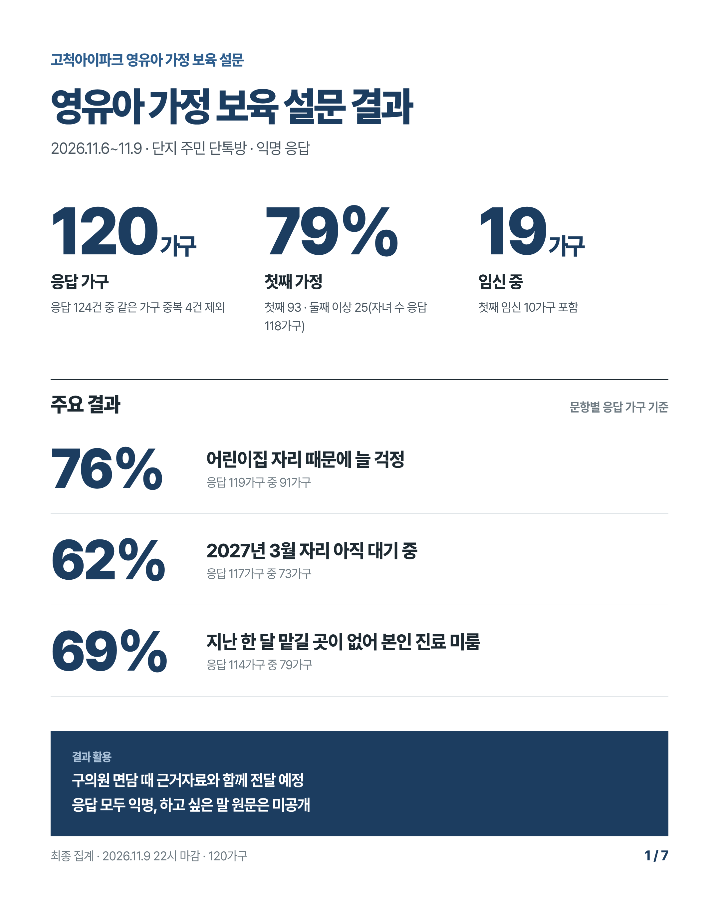
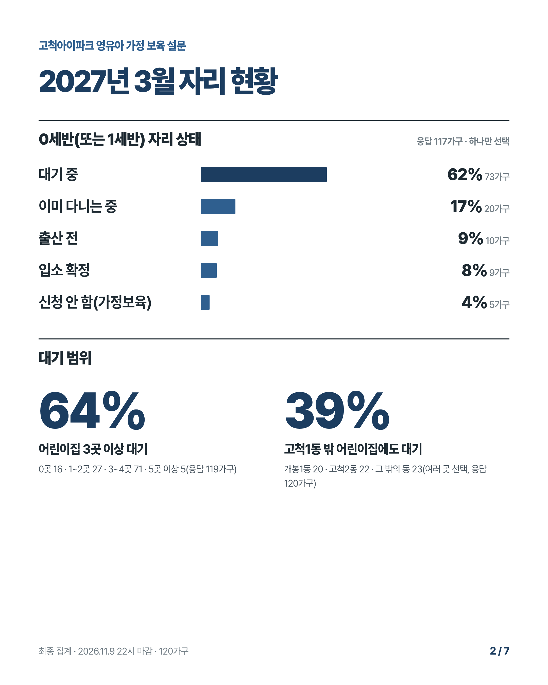
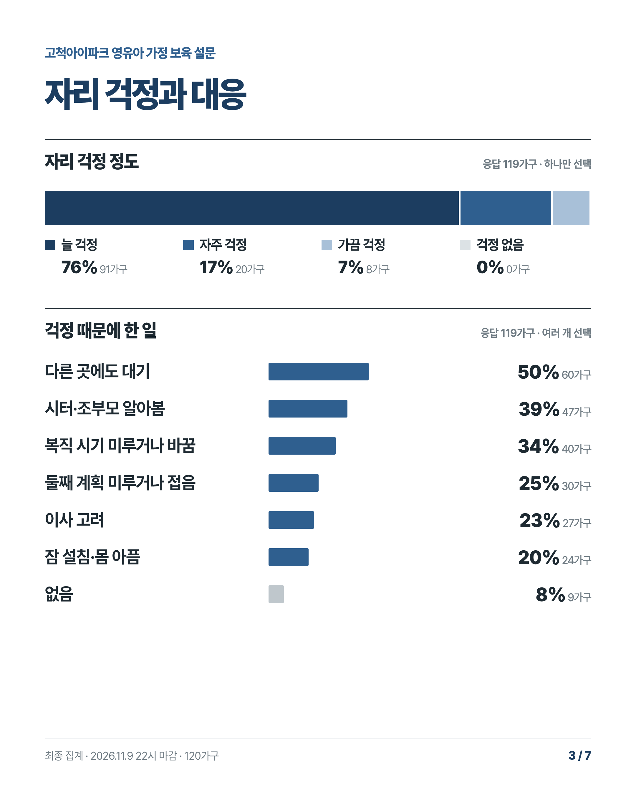
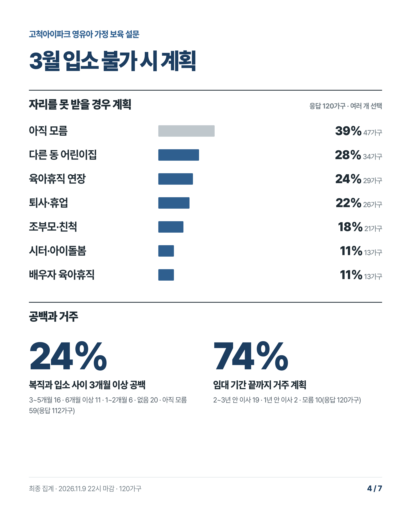
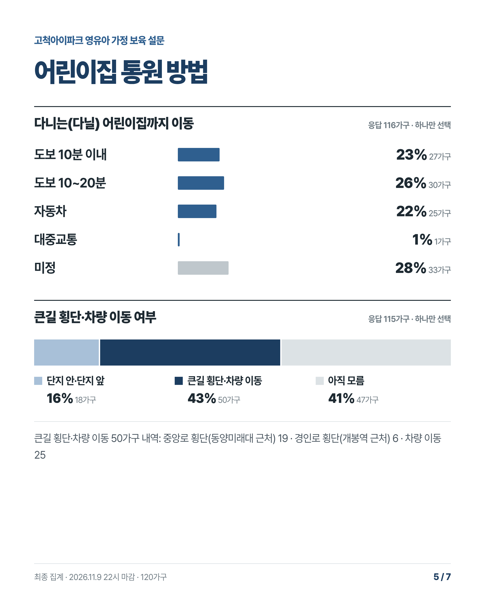
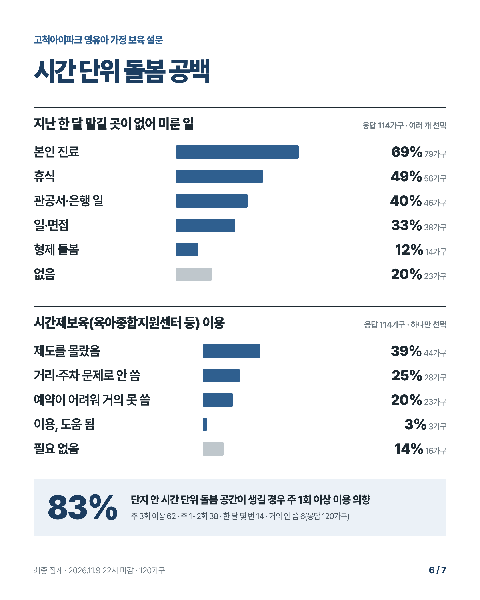
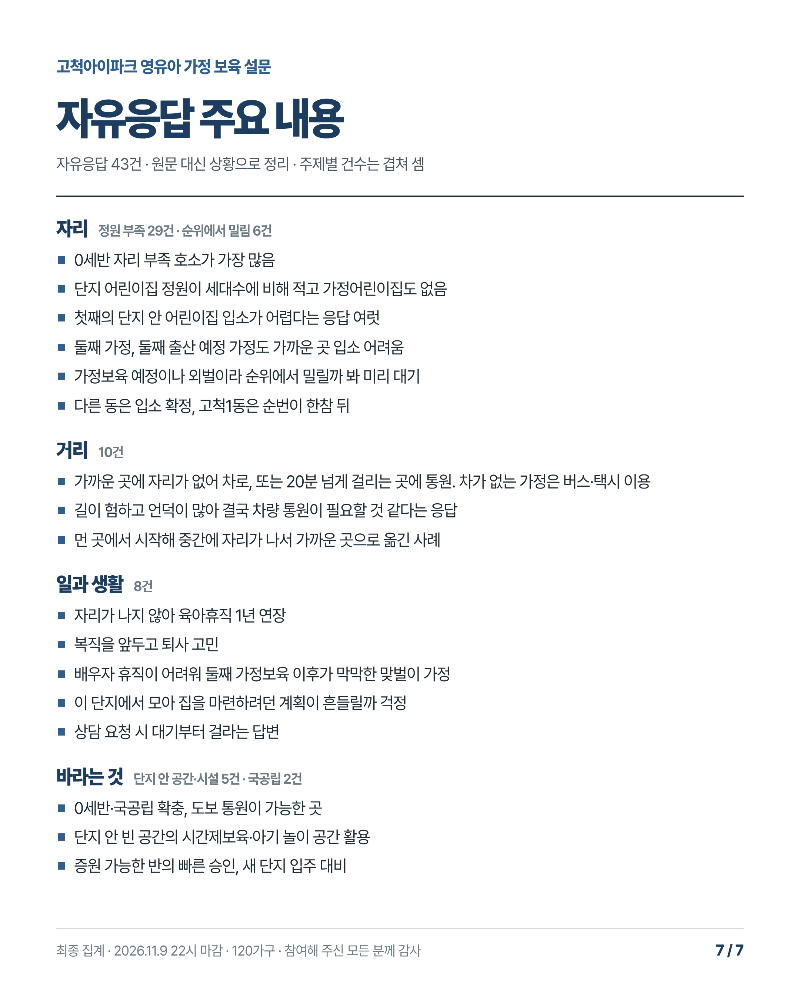
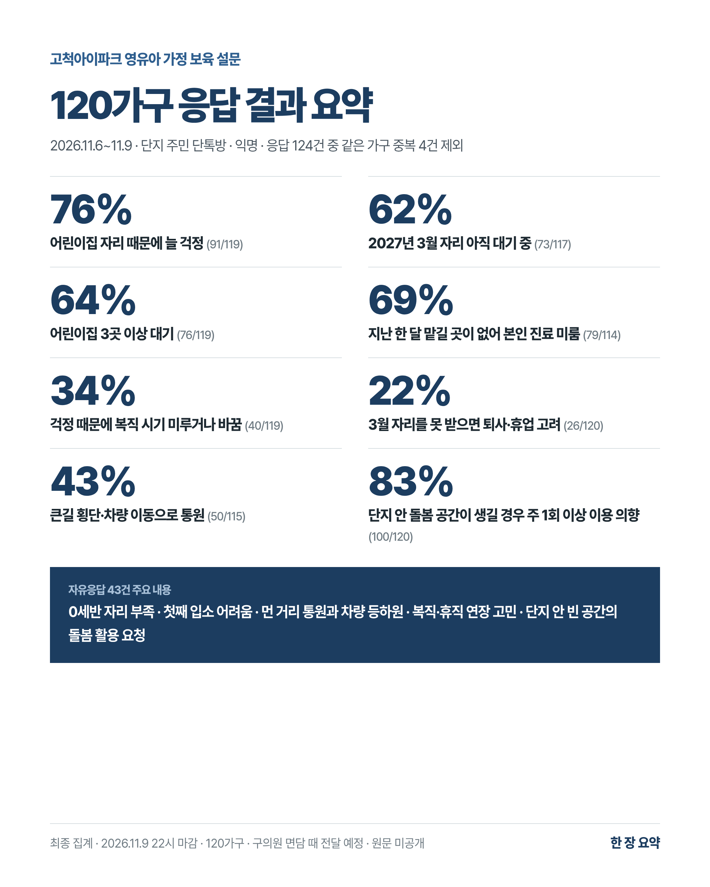

자료 목록
숫자로 보는 고척1동 0세반
269명
2026년 1~10월 고척1동 출생등록1
105명
고척1동 어린이집 14곳의 0세반 정원2
164명
올해 태어난 아이 수에서 0세반 정원을 뺀 값. 구로구 16개 동 가운데 최다3
1,574명
고척1동 어린이집 등록대기. 신학기 모집은 130명4
12.1명
모집 1자리당 대기 인원. 구로구 전체는 3.7명4
663 → 1,223명
고척1동 0~5세 인구. 5년 사이 84% 증가5
- 행정안전부 주민등록 출생등록 통계, 2026년 1~10월 합계. 2025년 한 해는 282명.
- 어린이집정보공개포털 기관별 '연령별 반 현황', 2026.11.13 조회. 0·1세 혼합반 정원 9명은 별도.
- 1번에서 2번을 단순히 뺀 값. 태어난 아이가 모두 0세반을 찾는다는 뜻은 아님. 같은 방법으로 계산한 다른 동은 개봉1동 145명, 신도림동 112명, 항동 95명, 오류1동 78명 순.
- 아이사랑 등록대기 목록, 2026.11.13 조회. 어린이집별 대기 인원을 더한 값이라 전 연령 포함, 한 아이가 여러 곳에 신청한 것도 각각 집계. 구로구 전체는 대기 9,689명, 모집 2,586명.
- 행정안전부 주민등록 인구통계(행정동별 연령별 인구), 2021년 10월과 2026년 10월.
설문 결과 카드








설문에 대하여
- 고척아이파크 주민 단톡방에서 받은 자발 응답이라 단지 전체의 비율은 아님
- 결과는 '○○가구 응답' 형태로만 공개. 적어 주신 글은 원문 대신 상황만 옮김